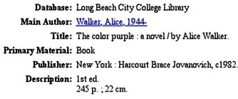

Assignment 1: Searching Web-based Library Catalogs
The purpose of this assignment is
- to acquire skill searching Voyager, the Library's LBCC Web-based catalog
- to get an introduction to other library Web-based catalog systems, such as Innovative, SIRSI, or WebPac
To access other library catalogs, go to the Library's homepage and click on "Other Libraries," or go directly to http://lib.lbcc.edu/academic2.html.
For your convenience, here are links to a couple of library catalogs from nearby institutions, which you may use to complete this assignment:
California State University, Long Beach
http://coast.csulb.edu/
California State University, Dominguez Hills
http://library.csudh.edu/
To complete this assignment, you may need to edit your answers before submitting the assignment to me. Please do not directly e-mail me your search results from the search screen. Rather, you must either write down the citations (author, title, place of publication, and date of publication) or copy-and-paste the information into a Word document, which you will then save and e-mail to me.
Before you answer Questions 1-3 below, please look at the following examples. Here is an example of bibliographic record found in the Library's online catalog:
And here is the way you would cite the record, using MLA style:
Walker, Alice. The Color Purple: a Novel. New York: Harcourt Brace Jovanovich, 1982.
- Search Voyager to identify and cite the following items listed below:
- Search for items written by the author Toni Morrison. (Remember to search by author's last name.) Using MLA or APA style, cite one of the items listed.
Get a document on MLA style (PDF)
Get information on APA style (HTML)

- Search for items entitled Guns, Germs, and Steel, and cite one of the items.
- Search for items on the subject of biotechnology, and cite one of the items.
- Perform a keyword search using these three words: television, violence, children. Cite of the items.
- Perform a call number search to find out which subject is related to this call number: HV6025. Cite one of the items.
- Perform a course reserve search and find out which books are put on reserve by the Biology Department. Cite one of the items.
- Perform an advanced search to identify a book with the word "California" in the title, whose author is Kevin Starr, and that was published in 1997. Use TAB to go to the different search boxes and select the appropriate field from the drop-down menu. List the fields you have selected from the drop-down menu, and list the full title of this book.
- Search for items written by the author Toni Morrison. (Remember to search by author's last name.) Using MLA or APA style, cite one of the items listed.
- Repeat the same searches above, but this time use a different Web-based catalog from a public, college, or university library, such as those listed above or some other of your own choosing.
- Describe your experience doing the searches and the results you obtained. In other words,
- Mention the type of search you performed (author, title, subject, keyword, etc.).
- List the exact term(s) you used in your search.
- State the number of entries you found.
- Point out any differences between the two systems.
- In your opinion, which system was easier to use?
Save your file as a .doc document, and send it as an attachment to an e-mail to your instructor, or type the answer as an e-mail message, and send it to your instructor.